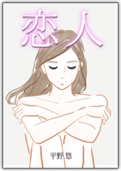

| 愛の別れ | |
| 平野 悠 | |
| pubfull (2019) | |
「愛のうそまこと」特別企画 シリーズのプロローグを無料提供します！

【期間限定！】 シリーズ全ての始まりとなったある出会い、そして主人公の立木を震撼させた驚愕の事実とは？ その全貌が本書の最後で公開されます。
このような手紙を君に出すことなど想像もしていなかっただけに人生は本当にわからないものです。
君との出会いはぼくの人生において大きな刻印を残しています。過去形ではなく現在形です。いや、未来形でもあります。君の出会いがなかったとしたら、ぼくの人生は平穏ではあっても面白くて刺激に満ちたものではなかったでしょう。また、人間として男としてどの程度成長していたか心もとない限りです。想像しただけでも背筋が寒くなります。ぼくの心が潤っていたのは君のお蔭です。
ですから、君との関係は生涯続くものと信じていました。ところが、偶然にもある事が判明し、ぼくは愕然としました。ゆえに君との関係を継続していいものかためらっています。その理由はこの手紙に同封した小説で明らかになります。小説としてのスタイルでしか伝える術がなかったことをお許しください。登場人物は君だけがわかるように設定しています。
地下鉄御堂筋線を梅田駅から北に向かうと、淀川を越えたところが西中島南方駅である。新大阪駅に隣接していることもあって、御堂筋線の西側にはオフィスビルが林立しているが、東側の御堂筋線と交差する阪急京都線南方駅周辺一帯は歓楽街だ。歓楽街のメインストリートといっても、北新地の本通りに比べると規模、華やかさ、賑わい、すべてにおいて雲泥の差があった。このメインストリートに面した雑居ビルの一角にラウンジ蘭がある。立木が蘭に出入りするきっかけは山ちゃんの誘いに因る。山ちゃんは商売人ではあったが、シャイで独特の芸術観を持っていた。自然と山ちゃんとはウマが合い、何かにつけて一緒に飲み食いした。立木と山ちゃんはほぼ同世代で五十歳あたりだった。山ちゃんは立木の本意が小説を書くことであることも知っていた。
その夜も山ちゃんは立木を蘭に誘った。立木は山ちゃんと肩を並べて歓楽街の雑居ビルに入ると、エレベーターで三階に上がり、蘭のドアを開ける。マスターがニヤリと笑い「サプライズかも」と意味深なことを言う。オープンしたばかりの早めの時間帯のせいか、奥まったボックス席に一組のお客と一人のホステスがいるだけで閑散としていた。
「可愛い子でも入ったの？」
立木はあまり期待もせず訊く。
「ま、ちょっとお待ちください」
マスターは相変わらずにやけた顔で気をもたせる。
「マスター、この前の清算や」
山ちゃんは上着のポケットから一万円札を取り出してカウンターの上に置く。
「どうも」
マスターは申し訳なさそうに一万円札を恭しく受け取る。マスターはノミ屋の胴元をしていた。八月終盤に行われる札幌記念の清算だった。蘭のホールは九月の残暑を和らげるために大型のエアコンが作動していた。
山ちゃんはビールで喉の渇きを潤すと、焼酎、ウィスキー、時にはワインにも手を出す。テーブルの上はさながらお祭り状態である。下戸の立木は烏龍茶とジンジャエールを交互に飲み、テンションの上がる山ちゃんとは対照的に冷静だった。酔いの回った山ちゃんはお決まりのカラオケタイムに入る。山ちゃんはいかつい顔付きに似合わず、青春の歌を選曲し、直立不動で歌う。余計な動作は一切ナシだった。山ちゃんが三曲目を歌い終わったところで、マスターが腕時計に目をやり「そろそろです」と言う。
時刻は十時前だった。すると、ドアが開くと同時に鈴がカランカランと鳴った。立木に向かって女が歩いてくる。立木は最初よくわからなかった。体形を隠す地味な服のせいかもしれなかった。
「茉 侑 やないか」
山ちゃんが懐かし気に言った。
「出戻り体験ですねん」
マスターが愉快そうに付け加える。茉侑はまるで立木が今宵この時刻に蘭にいることを確信していたかのようなにこやかな表情で「やっと会えたわ」と言う。立木は募る嬉しさに身を乗り出して茉侑の手を握りしめた。白くて柔らかな肌だった。
「何年ぶりだろう」
「二年半ぐらい」
「どうしていたの」
「どうにか生きてたわ」
茉侑の言葉には一言では語り尽くせない重いものを背負っているニュアンスが込められていた。茉侑は顔を近づけると、立木にささやく。
「立木さんとは深い関係になると思うから、隠さずに話しておくね」
立木は何事かと心の準備をする。
「娘がいるの。名前は綾」
茉侑がそう告げた。
「女はひとり産んだくらいがちょうどいい」
立木は驚かなかった。これもまた人生ではないか、と思った。
「先に帰るわ」
山ちゃんが立ち上がり目くばせした。恐妻家の山ちゃんは門限を十一時と決めている。後は好きに愉しんで、と目くばせにはそんな含蓄があった。
「わかった。茉侑と楽しくしている」
「茉侑、キュッと摑まえときや」
山ちゃんはそう言って破顔一笑する。見送りに立ち上がろうとする茉侑を手で制し、山ちゃんは舞台の袖に消える役者のように立ち去った。
「亭主は？」
「離婚したの」
「そうか。大変だね」
「いいの。立木さんと会えたから」
茉侑は立木の手を握り返したまま言った。見栄っ張りな上に甲斐性無の元亭主との結婚は失敗だった。男を見る目は誰よりもあるつもりでいた。執拗な押しに負けたとしかいいようがない。茉侑は自分が腹立たしかった。だが、綾をこの世に得るためだったと思えば元亭主は踏台の一つでしかない。
そうした見方をすることで茉侑は前を向くことができた。そして、これまでの男は立木に出会うまでの踏台だった。茉侑はその思いを強く持った。
立木はかつて追い求めても、右に左にかわされ続けた茉侑が寄る辺を求めていることに歓びを感じた。もっとも、この二年半、立木は茉侑を一途に想っていたわけではなかった。立木が蘭を辞めて行方が知れなくなったからといって探し回ることもなかった。
立木が茉侑と出会った頃、茉侑はまだ二十歳に過ぎなかったが、話していると二十歳とは思えない心の強さと凛とした考え方が伝わってきた。
「たかだか十代でエルメス、シャネル、フェンディといったブランドで身を固めないと価値がない、みたいなことを言ってる子がいるの。十代という若さが価値なのに見栄にばっかり気がいって心の中が空っぽ。年相応なオシャレでいいのに。お客さんはそんなブランドに惹かれてお店に通うわけじゃない。どれだけ疑似恋愛が楽しめるかで満足するものなのよ。だから、ホステスは読書もし、映画も観、新聞にも目を通してたくさんの引出を持っておかないと、お客さんとの会話も弾まない」
西中島南方のラウンジ蘭は北新地からはほど遠い場末感が漂っていた。だが、場末であっても茉侑のようなホステスがいれば十分だ。茉侑が語ることは一つ一つ立木の腑に落ちた。茉侑とは相性が合った。
茉侑が蘭に流れて来たのはそれなりの理由がある。流れてくる者は茉侑一人にとどまらない。理由の大半は北新地の厳しいノルマに疲れたことに尽きる。
立木にとっては理由がどうであれ茉侑がここにいる、という現実が大事だった。茉侑は絵心もあって自分の個展を開きたい願望を持っていた。茉侑が最も好きな画家はフェルメールだった。立木は意外な気がした。ゴッホ、ダリ、ピカソといった画家の名前を挙げるものと思ったからだ。立木はフェルメールの「真珠の耳飾りの女」は知っていた。立木はますます茉侑に興味を持った。だから、立木は茉侑が個展を開く願望を告げた際には「どこか画廊探してあげる」と言った。茉侑が歓ぶことなら力になりたい、と立木は考えた。
「本当。嬉しい。お願いします」
茉侑は目を輝かせて微笑んだ。
茉侑はとにかくよく語った。出会って半年後のある日曜日に新大阪界隈の居酒屋で立木は茉侑と食事した。茉侑は焼酎を飲み、料理も食べながら、時には笑いころげて語った。
茉侑は一息ついて煙草をくゆらす。立木を見る目が優しい。立木は耳を傾けているだけで心が弾む。茉侑は話を続ける。立木は茉侑を口説くつもりで近くのシティホテルを予約していた。
茉侑は九割方拒絶するだろう、と立木は予測していた。だが、茉侑は「どんなところかちょっと覗いてみたいな」と言って部屋まで来た。狭いシングルの部屋はベッドと机だけの簡素なものだった。立木は茉侑に何も告白していなかった。奇妙な成り行きといえた。立木はベッドに寝そべり、茉侑は机の椅子に座ってメモ用紙に絵を描いていた。茉侑がベッドに来ればよし、来なければ、それもまたよし。立木は力づくで押し倒す男ではなかった。真冬というのに茉侑は両肩と胸元が露出したセーターを着ていた。白い肌が眩しかった。ベッドに来る兆しのない茉侑の背後に立ち、茉侑が描く絵を眺めながら立木は軽く茉侑のうなじを触れてみた。茉侑は無言で「ダメよ」という態勢を整え黙々と絵を描いた。
「個展は開かないの」
「開きたい。でも、立木さんは個展を開く見返りに私を求めているのでしょう」
「ま、そうかな」
立木はバツが悪そうに言った。茉侑は立ち上がって立木を睨む。
「立木さんはりっぱな会社の役員じゃない。私みたいな若いホステスと関係持ってどうするの。家庭もあるのだし。よくないわ」
立木はしばし唖然とした。茉侑が言っていることは正論だった。しかし、目の前には眩しいほどの肌を露出した茉侑がいた。
「茉侑が好きや」
立木はそう言った。
「立木さんは私に興味を持っているだけよ」
茉侑の言葉は正鵠を射ていた。立木は沈黙をするほかなかった。
「でも、いつか、立木さんは私に落ちる」
茉侑は怒ったような真剣な眼差しで言った。立木はなす術もなく立ち尽くした。
茉侑が蘭を辞めて去ったのはそれから二ヶ月後のことだ。茉侑が何度かメールで自分の居所を立木に伝えて飲みに来てよ、と誘うことがあった。しかし、他の用事が重なるタイミングでの誘いだった。立木は、その都度「ごめん」と返事をした。やがて、茉侑からのメールは来なくなった。
時間はいつの間にか十二時前になっていた。
「ボチボチ帰る、とするかな」
立木は茉侑にそう言った。
「じゃあ、そこまで送ります」
茉侑は立木の腕を組みエレベーターホールまで来た。ほどよい狭さと仄暗いエレベーターホールで別れを告げる瞬間、茉侑が立木の首に腕を回してキスをした。茉侑の肉感的な舌が立木の舌に絡み深みのある甘さで口腔を満たした。立木は衝撃を感じた。すべてが凝縮されたキス。立木の脳天に茉侑の舌の感触が刻印された。立木は憑かれたように茉侑とキスをした。こうして立木は茉侑に落ちた......。
ある晴れた土曜日の午後、立木は爪の手入れをしていた。夕方には茉侑と会う約束になっていたからだ。右手の人差し指と中指は念入りにやすりがけもした。立木は還暦を過ぎて体力の衰えを感じていた。だが、自分ではまだ三十代のつもりでいた。ギャップに唖然としながらも自然体で悩ましい状況を受け入れていた。人間として老いるのは自然の摂理だ。心が枯れるかどうかは自身の心構え次第ではないか。立木の考えはそうだった。見た目にも年齢相応に見られたことはない。社内には四十代で初老の風貌になっているものもいた。心に艶がないのでは、と立木は推測する。一度きりの人生というのに嘆かわしいことだ。立木は溜息をつく。
立木は腕時計を見た。茉侑を迎えに行く時刻だ。立木は車を運転しながら茉侑の結婚について考える。茉侑に結婚話が持ち上がっていて、相手の何某は短期異動で東京にいる。何某は茉侑と同じ年だが、茉侑に一目惚れしたようだ。茉侑に綾という小学六年生の娘がいることもまったく気にしていない。
立木が茉侑から何某について知ったのはつい最近だ。数年も経つと茉侑が四十に突入し、いずれ綾も親離れするだろうから、まだ、女として魅力のあるうちに結婚相手を見つけなければ、茉侑が孤独死に至るという強迫観念が妹の茉耶 を襲ったようだ。そこで茉耶は姉のために自分の男友達を集めその場に茉侑と綾を入れた。茉耶はなかなかの策士だ。姉思いの気遣いには感心すると同時に余計なことをする妹だな、と立木は苦笑する。
茉侑には天性の明るさと座談のうまさがあった。たちまち、茉耶の男友達は茉侑に惹かれた。茉侑は昔から同じ年頃の男は恋愛の対象として見ることができず、その場の賑やかしで付き合う程度であった。茉侑はそのつもりでも男たちは母性と女の魅力を有する茉侑を憧憬した。とりわけ、何某は実の母という存在を知らないまま大人になっただけに、茉侑に内在する母性に強く惹かれ他のライバルを蹴散らせて茉侑にプロポーズした。
茉侑の北新地時代の親友に奈緒がいた。奈緒にとって茉侑は特別な存在であった。茉侑が綾を生んだ後、亭主と破局を迎え離婚騒動の最中で携帯が使えなくなった。茉侑は実家に戻っていた。茉侑と連絡を取ろうにも携帯がつながらない奈緒は気も狂わんばかりに茉侑のマンションに何度も行った。綾を実家に預けてマンションの整理に戻った茉侑はポストを開けて驚いた。たまりにたまっていた郵便物、チラシ、その他がドッと溢れ出てきたからだ。その中に何枚ものテレフォンカードとメモが混じっていた。茉侑は直感的に奈緒が来ていた、と思った。茉侑はメモに目を通す。
「茉侑なしには生きていけない 奈緒」
茉侑は思わず嗚咽した。地獄で仏に会った心境であった。
立木は茉侑から自分に何かあった時は奈緒に連絡を取って、といって奈緒の携帯番号をメモした紙切れを持たされたことがある。いまだに何かは起きていないため、立木が奈緒に連絡することはなかった。
奈緒はアフターでお客と連れ立ってバーに行くと、お客の膝の上に乗っかり、上手にたらしこんでいく。茉侑には凛とした理性が背筋を貫いていたが、奈緒は奔放であった。茉侑は面白おかしく話はしても男の誘惑には乗らなかった。とにかく奈緒はイケメンを見ると食ってみたくなる性分だった。
茉侑が新地を上り、新大阪界隈のラウンジに流れて結婚した直後、奈緒も子連れの男と結婚した。男は摂津育ちで自営業の社長だ。前妻は逃げ出したとのことだ。なにせ男は嫁と姑の諍いがあると姑の側に立つ。マザコンの典型といえた。奈緒が妊娠八ヶ月の時、姑といざこざがあった。亭主は北新地のホステスとねんごろになって家を顧みない。翻って奈緒は連れ子の世話、家事に追われ、姑からいたぶられる。
怒りが限界に達していた。そこへ情事の名残を発散する亭主が帰宅した。奈緒の怒りは炸裂した。感情の抑制が効かなくなった奈緒は亭主に「あんたなんか、死んだらええねん」と言い放った。売り言葉に買い言葉で亭主は「ようし、死んだらぁ」と啖呵を切って裏の倉庫に向かった。奈緒は不安に駆られ、茉侑に携帯で電話し、ことの顛末を語り「どないしよ」と訊く。
「ええか、奈緒、男いうもんは繊細な生き物なんやから、ちょっとしたことで心に傷つく。万一、いうこともあるから倉庫行って様子見ておいで」
茉侑の忠告を奈緒は素直に聞き、携帯で茉侑とボソボソ語りながら身重のからだを引きずって倉庫に辿り着いた。シャッターが地面から三十センチあたりで止まっていた。身重の奈緒はシャッターを持ちあげるのも、三十センチの隙間から中を覗き込むのも大変だった。
「どないしたらええ」
「一刻を争うんやから火事場の底力出してシャッター開け！」
茉侑は激を飛ばす。仕方なく、奈緒は死ぬ思いでシャッターを開けた。そして、やおら、中を窺うと「茉侑、あいつ首吊ってるわ」と告げた。
「実況報告してる場合やあらへんで。はよ、助けんと」
奈緒は近隣の親族に助けを求めて亭主の一命は取り止めた。
奈緒は自分の子供ができても若い男との情事を愉しむ。若い男は亭主が自営する仕事場の幹部である。危険な火遊びだ。茉侑が何度忠告しても奈緒は耳を貸さない。結局、奈緒は離婚した。
奈緒は華やかなクラブで仕事するのが好きな資質で、茉侑に一緒にお店持たないか、といった誘いもした。茉侑は綾がいるので同意はできない。奈緒はミナミの高級クラブに勤めだし、売上も上げている。奈緒はお店で元亭主の縊死未遂事件を面白おかしく語ってお客の度肝を抜く。そんな奈緒を贔屓にするお客がいた。古希に近い年齢の上客だ。奈緒は上客にせがまれてランチをすることになった。奈緒は茉侑に連絡を取り「お願いだから、付き合ってよ」と頼み込んだ。茉侑は夜ではなくランチだから承諾した。上客は資産家で女遍歴も華々しい。茉侑を一目見るなり「わしのタイプやな。わしの愛人になってくれへんか」と切り出した。
奈緒はニヤニヤして黙っている。どうやら、奈緒は上客の好みが茉侑に合っていることを察知していた。茉侑は驚いたが、この手の男に対処する術は心得ていた。
「わしは何人も若い愛人作ったけど、つまるところカネや。カネだけの関係いうもんは寂しいこっちゃ。やっぱり、男女には愛が必要や」
「わたしもそう思います」
「そうやろ。で、わしの愛人になってくれへんか」
茉侑は内心、矛盾した男の言動におかしさを覚えながら、「わたしには好きなヒトがいてます」と答えた。
「えっ！ ほんまかいな」
「はい」
「相手とはカネだけやないのか」
「違います。好き合っています」
「羨ましいな。わしもそうした関係が持ちたいんや」
男は逃した魚は大きいといわんばかりに落胆した。男はその後、お店の中で「わしは茉侑がいいんや。茉侑を連れてきてくれ」と奈緒やママに訴えた。ママが奈緒を呼んで「茉侑てそんなにすごいの」と訊く。奈緒は「ええ、新地でナンバーワンでした」と誇張した。ママは「口が立つんや。そら、あかん。うちの店にはそんな子は一人もいてへん」と捨て鉢な言い方をした。
愛人募集男の話は一年前のことだ。茉侑は包み隠さず立木に様子を語って聞かせた。
何某の話も最初は茉侑のモテぶりを証する類に過ぎないと立木は思っていた。なにせ茉侑との関係は永遠に思えたのだから。立木は永遠の愛などこの世に存在しない、と考えていた反面、茉侑との愛は不滅と信じていた。理由は茉侑の感性に交感する男は自分しかいない、と立木は確信していたからだ。茉侑にしても何かにつけて「他の女でいちからわたしたちみたいな関係なんて作るの無理よ」と口にしたものだ。
愛人募集男を一蹴した茉侑は何某も本来なら相手にしなかった。茉侑は何某を持ち出す前に立木の心を見極めるべく「ね、わたしが結婚するとしたら、どう思う」と訊いた。立木は「茉侑の将来考えたら、そんな機会が来たら突き進むしかない」と言った。
「よかった。嬉しい」
茉侑はホッと胸を撫で下ろして目を潤ませた。立木は内心動揺しながらも、表情を変えることなく対応した。
「何を心配しているの」
「だって、立木さんは他の男とはダメだ、とよく言ってたから」
立木は茉侑を抱いている時、耳元でそうささやくのが常だった。それは料理に例えると、香辛料みたいな刺激である。刺激的な言葉は睦事につきものだ。立木はかつて半ば冗談で「茉侑がその気になれば男の三人や五人は手玉に取れるよ」と言ったことがある。実際、豊満な女に癒され、騙される男は多い。実際、殺人事件にまで発展したケースが報道されている。
「綾もいるのに、そんな面倒なことできない。わたしは立木さんひとりで十分なの」
茉侑は北新地時代からお客さんはもちろんのこと好きな相手も姓に「さん」を付けて呼ぶ。潔癖症ゆえにケジメをつけているのかもしれない。立木は他人行儀めいた違和感を持ったが、茉侑の習性は変わらなかった。
風向きが変わった。諸行無常である。とはいっても、簡単に縁が切れるわけではない。立木と茉侑の関係は普遍であった。矛盾を孕みつつ立木と茉侑の逢瀬は続いた。いつもの場所、いつもの時間に立木は車を停車させて茉侑からの連絡を待つ。綾をひとりマンションに残すことは危険で、茉耶が子守に来てくれることになっていた。日によっては三十分程度遅くなることもあった。立木はじっと我慢して待つほかない。綾の安全確保が最優先である。それでこそ逢瀬を堪能できる。立木の携帯が鳴る。
「今、出たよ」
「わかった。移動する」
立木は待機場所から茉侑を拾う地点に車を進めた。四つ角の手前に車を止め、茉侑が現れるのを待つ。やがて、角から茉侑が現れ立木に手を小さく振る。
「お待たせ」
茉侑はそう言って笑顔で助手席に乗り込む。香水の匂いが立木の鼻孔をくすぐる。立木は茉侑の耳元に顔を寄せ「ええ匂い」という。逢瀬の挨拶であった。茉侑は常にエンジン全開でしゃべる。運転している立木の反応が鈍いと「聞いてへんな」となじる。
「ちゃんと聞いているよ。でも、運転に気を使わないと」
立木がそう言い訳すると「あっ、そう」と言いつつ茉侑は話を続ける。楽しいから笑うのではなく笑うから楽しいのだ。豊満な胸の谷間を惜しげもなくさらす茉侑はさながらオペラ歌手といえた。立木は茉侑の豊満な胸の谷間とソプラノを堪能しながら愛車を疾走させる。男女の関係には飽きや惰性といった魔物が潜んでいるものだが、立木と茉侑は会うごとに新鮮さを感じる。稀有な関係だ。偏屈な家系の血を引く立木は気難しい面があった。不思議と立木は茉侑のオーラに触れると偏屈さが影を潜め陽気になる。
やはり、茉侑の天性な明るさと気遣いの賜物だ。立木はしみじみそう納得する。
食事後、ホテル街に向かって運転する立木は茉侑のリクエストに応じてオーディオモードをアイポッドに接続するとトランスやアイリッシュ音楽を流す。夜の都会を疾走する車の中は音響がマックスに達する。
「いいわ。家で聞くのと迫力が全然違う」
陶然と音楽に耳を傾ける茉侑の姿態はすでに艶めかしい。豊満な胸の谷間がひと際目立つ。信号待ちで目が合うと茉侑は「とろけそうよ」と挑発する。立木は思わず左手を伸ばす。
「ダメよ。坊や。我慢が足りないわね」
茉侑はそう言いつつ立木の手を取り、中指をペロリと舐める。
「いい感じ」
立木は痺れるような快感を得る。だが、信号はすぐに青に変わり、立木は運転に集中する。
「手を払われた」
茉侑が甘えた声ですねる。
「ごめん。運転しないとな」
「いいのよ。音楽で気持ちがだんだんエロくなってくる」
「もっと、エロくなって」
「いいのかしら。からだがもたなくなるかもよ」
「望むところだ」
「覚悟しなさいよ。坊や」
「はい」
「もう、ダメ。早く抱いて」
もちろん、茉侑の演技だ。立木は茉侑の演技を愉しみながら車をホテル街へと走らせる。明るく豊満な肢体の茉侑に惚れこむ男はあまたいたとしても何ら驚くに値しない。当然である。
ホテルの一室に入るや、茉侑はベッドに身を投げ出して「からだがうずいちゃう」と立木を誘う。立木がその気になって茉侑にキスをしようとすると「ダメよ。早くキレイキレイしてきなさい。からだのうずきが、ああ、もう待ちきれない」と入浴を促す。
立木は手際よくシャワーを浴び、バスタオルで下半身を覆いベッドに戻る。茉侑は煙草をくゆらせて冷蔵庫から取り出したアルコールを飲んでいた。立木を目で追っていた茉侑は煙草を灰皿に押し付けて火を消す。
「真っ暗闇にしておいてね」
茉侑はそういってバスルームに消えていく。立木は全室オフのスイッチを押し、部屋の中を暗闇にする。有線の音楽ジャンルはクラブミックスを選択する。茉侑が好むトランスが主に流れるチャンネルだ。ボリュームをマックスにする。立木は宇宙の暗闇に浮かぶ自身を想像する。広大で不毛な漆黒の暗闇は中心もなければ周辺もない。生命の誕生と進化が行き着いた現代社会はあまたの人種と宗教と言語が存在し、愛と憎悪が葛藤する。気も遠くなる永遠の時間を受け継いできた人間がいとも簡単に自殺し、殺人を犯し、自爆テロを繰り返す。人の命は地球よりも重い、といったのは誰だったか。現実はその名言をあざ笑っている。茉侑がバスルームから出る気配がした。立木はほんの少し明かりを浮かせた。茉侑は明かりに吸い寄せられるようにして近づいてくる。茉侑は黒いランジェリーを纏っている。香水の匂いと引き直したリップの光沢が艶めかしい。
茉侑がほどほどに感じた後は、立木が絶頂に達する番だ。いっても、たかだかしれた快感だ。しれた快感とわかっていてもいかずには睦事は完了しない。本当に厄介な生理だ。年齢を重ねるごとに立木は遅漏になっている。これは自ら勃起しないことと無関係ではない、と立木は思っている。
茉侑は愛の儀式が完了するとソファに座って煙草を吸う。
「電話は毎日掛かってくるの？」
立木はベッドの中で腕枕しながら何某について訊く。
「会えないから、電話でわたしの声を聞くしか気が晴れないみたい」
「茉侑をベッドに押し倒したら犯しまくるだろうね」
「いやーん。やめてよ」
茉侑はそう言いながらも満更でもなさそうな顔付きだった。
「Ｘデーはいつ頃になりそうかな」
「まだわからない」
「難儀だな」
「そんなに気になる」
「そら気になるよ。けど、なるようにしかならないな」
「そうなのよ。綾がせめて中学までは大阪にいたい、ていうし」
「友達関係は大事だから」
「そうよね。出る？」
「ああ」
立木はベッドから起き上がるとバスルームに入り、簡単に体を洗いながす。入れ替わりに茉侑がバスルームに入る。部屋の明かりを全開にする。
茉侑は立木が恋多き男であることはよくわかっていた。立木も茉侑が立木自身のことをそう思っていることは知っていた。だが、茉侑は立木のプライベートに立ち入ろうとするほど野暮ではなかった。ましてや、茉侑は想像もしなかった求愛者の出現に真摯に向き合い求愛を受け入れる心構えにあった。
立木のライフワークは小説を書くことだ。茉侑も十代の頃漫画家を志していたこともあり、読書や映画に造詣が深かった。立木に共鳴する感性があった。互いに高め合う関係であるといえた。茉侑の再婚は心の痛手だが、祝福するのが自分の役目だ、と立木は思った。
立木は茉侑の再婚に備えて心の空白を埋めてくれる愛人を求めることにした。茉侑もそれには賛同した。ただ、茉侑は、「立木さん、気をつけないとダメよ。立木さんの家庭を壊す女は愛人失格だから」と忠告する。
もちろん、立木もそれは心得ていた。家庭を守ってこその道楽だ。
茉侑は北新地でクラブホステスをしていた経験があっただけに、立木が新たな愛人を求めて北新地に通い出すと、あれこれアドバイスした。立木は茉侑のアドバイスを胸に刻む。
北新地にはあまたのクラブ、ラウンジがあり、あまたの女の子がいる。立木はそれなりに女の子を見て来た。茉侑に優る女の子に遭遇したことはなかった。立木は茉侑が最後の女であることを望んだが、人生とはままならない。綾を見守ってシングルマザーで生きていく覚悟でいた茉侑が何某の求愛を受け入れることになるとは。
この時は何某については全くの未知であった。やがて立木は偶然の出会いで恋人になる優香から驚愕の事実を知ることになる。
（了）
恋人 大人の恋愛ストーリー（驚愕の事実編）」 「愛の別れ」は驚くべき展開へと進みます。
禁断の恋、永遠の処女性、最上の歓喜、そして驚愕の事実・・・。茉侑との別れにとまどう立木周に届いた一通の誤信メールから始まった優香との関係は、いつしか抜き差しならぬものへと発展していった。そんなある日、熱い抱擁のあとに優香が見せた携帯の写メに立木が知ることになる驚愕の事実とは？
最後にお礼とお願いです。ここから大きな違いが生まれます。
最後までお読みいただき本当にありがとうございます。自分が苦労して書いた作品を完読していただくことは、作者としてこの上ない幸せです。
もし「愛の別れ: 大人の恋愛ストーリー （すべての始まり） 」を楽しんでいただけましたら、このあとの５分を使ってＡｍａｚｏｎ読者レビューをお願いできないでしょうか。
作家の一人としても、これからの作家人生に読者のご意見は大変に貴重です。折れそうな心の支えとなるからです。また、頂いた意見は今後の作品の参考にさせていただきますのでよろしくお願いいたします。
以下をクリックするとＡｍａｚｏｎページが開きます。あなたの一言をお願いしいたます。
こちらから、読者のおすすめの声で応援する
今回のご縁に感謝いたします。このあと、ストーリーは「愛のうそまことシリーズ」へと展開していきます。このあとの展開でもご一緒できれば幸いです。ありがとうございました。
大人の恋愛ストーリー作家
平野悠
タイトル
愛の別れ
発行日
平成三十一年四月十一日
著者
平野 悠
発行所
パブフル
本作品の全て、または一部を、著作権者に無断で複製・転載・配信・送信、或いは内容を無断で改変する等の行為は、著作権法によって禁じられています。